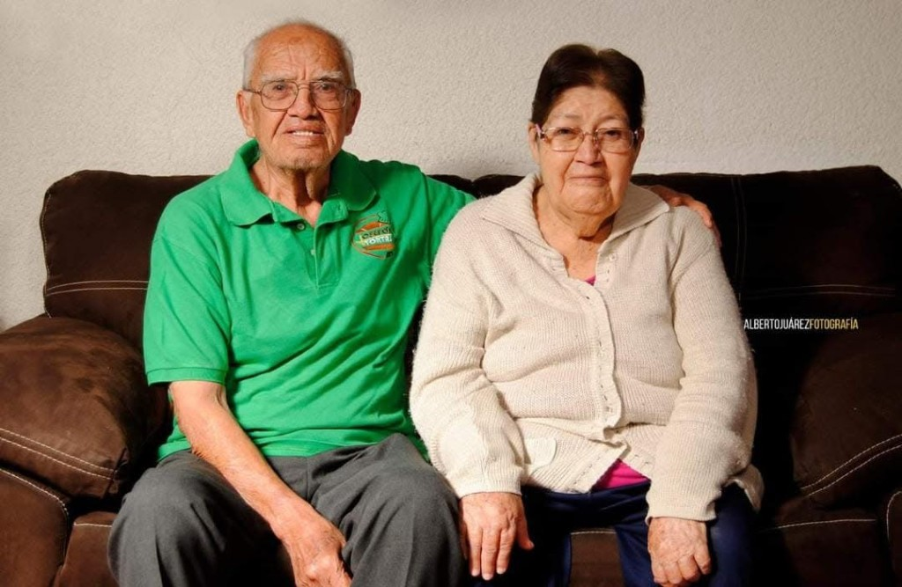

¡Las auténticas!
Tortas Josefo
Sabor que te conquistará
Especialidad: la cubana

Historia
Un negocio de familia en Cortazar, Guanajuato.

Josefo y Gisela
Tortas Josefo es un puesto real de Cortazar. Lo llevan Josefo y su esposa Gisela: ella y él armaron el negocio en familia y lo siguen atendiendo.
No es una cadena. En los registros públicos aparece como lonchería de tortas y tacos, de pocos trabajadores, como un puesto familiar.
La primera dirección que sale en directorios es Calle Mariano Matamoros 100, en el Centro (C.P. 38300). Ese local ya estaba dado de alta antes de 2010.
Después abrieron otra sucursal en Boulevard Paseo de la Juventud (Valle Hermoso / Santa Lucía), cerca de Colegio Militar y el Centro Cultural. Esa unidad aparece registrada en diciembre de 2014.
El teléfono que publican los directorios es el 411 103 8297.